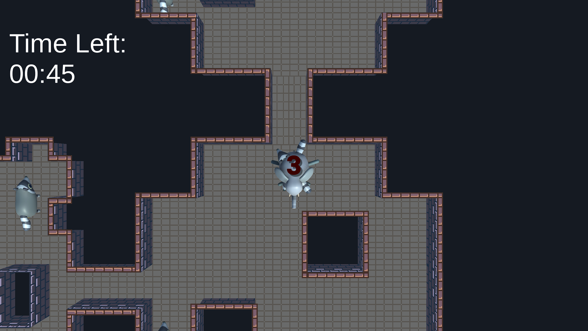

Game Jams
For those of you who don't know, a Game Jam is a game making competition where you create a game in a set amount of time (usually 2 - 3 days). In these periods you work yourself extremly hard, staying up late and not taking many breaks. But at the end of the jam you are rewarded with an amazing finished product, new friends and a real sense of achievement. Anyways, I have done many game jams over the past couple of days.Heres A list:
October 2022 - A elephant and some mean racoons

This was my first Game Jam game I ever made and it was made for Ludum Dare 51. I made it around a month after I learning Unity. I wasn't very proud of it but it was the proccess that counted! It's also really hard to explain what this games about. Its kinda wierd.
January 2023 - Farmer Joe
Me and my friend made this game for Ludum Dare 52. Its about farming and making as much money as possible in a short amount of time. I did all the code and a little bit of the art whilst he did the rest of the art. We ended up getting pretty good placement and we were really proud of the game. I continue to work on this game today!
April 2023 - Lunar Artillery
I made this game for a Mini Jam with a random person who I've never actually spoken to. He did the art and I did the code. Its a shooter with vibes that could be compared to Enter The Gungeon. I was proud of this although I made it way to hard for people to get very far.
September 2023 - Fun Ant Game

This is my most recent entry for Ludum Dare 54. The games a game about building an efficient ant colony. I'm proud because I did it all by myself including music which I've never done.